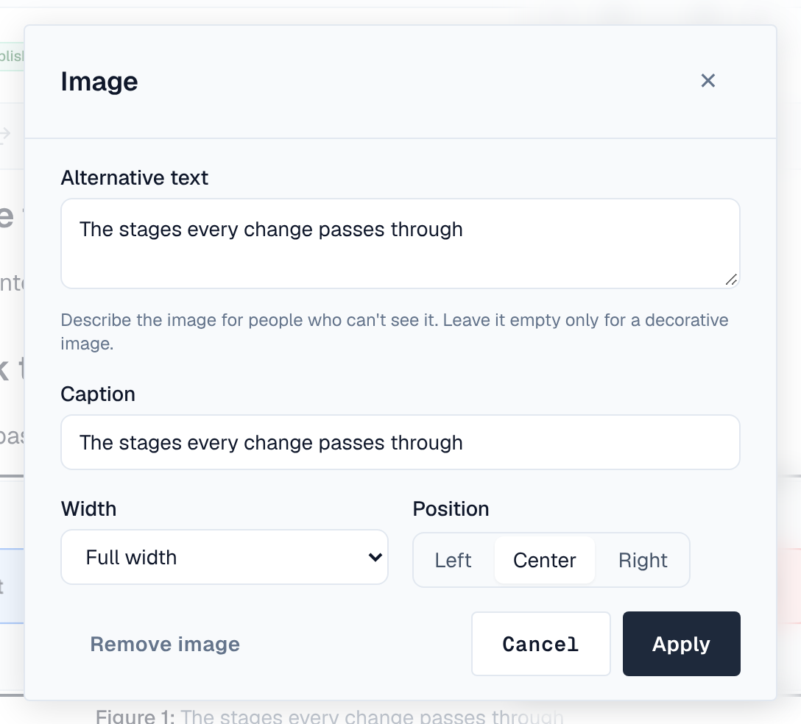
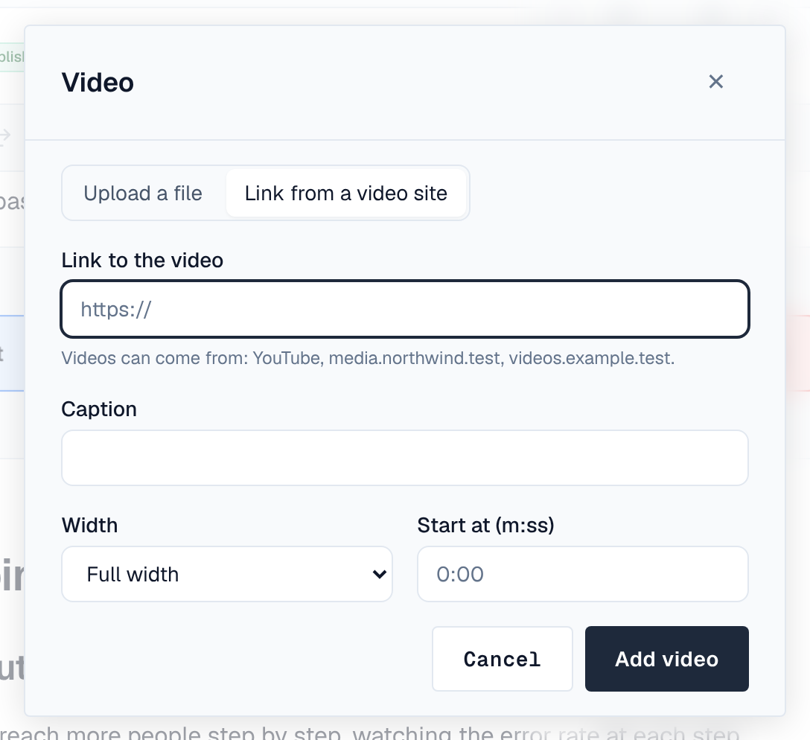

1. Images
Add an image with the image button in the editor's toolbar, by pasting it, or by dropping the file onto the page. PNG, JPEG, GIF and WebP images up to 20 MB are taken, at most 16,384 pixels a side and 50 million in all.
Select an image to open its settings:
| Setting | What it does |
|---|---|
| Alternative text | Describes the image for people who can't see it. Leave it empty only for a decorative image. |
| Caption | One line under the image. With Figure numbers on in Page details, captioned images are numbered Figure 1, Figure 2, … for readers. |
| Width | Small (a quarter), Medium (half), Large (three quarters) or Full width. |
| Position | Left, Center or Right. |

Remove image takes it out of the draft; readers keep seeing it in the versions that have it. Images pasted from other websites aren't taken: download and add the file.
2. Videos
Add a video from the toolbar or the / menu. Where the video comes from is either:
- Upload a file: MP4 or WebM, up to 200 MB. A poster frame is taken from it when it's added. Add Subtitles (optional) as a WebVTT (.vtt) file up to 512 KB, with its language (such as en or pt-BR). Readers play it in the browser's own player; it plays where the browser supports its format (H.264 MP4 and VP9 WebM play nearly everywhere).
- Link from a video site: paste a link to a video on a site your administrator allows (YouTube and Vimeo when allowed, and others they add in Settings → Security → Video sites). A YouTube or Vimeo page link is turned into its player, keeping the start time.
Both take a Caption, a Start at time (m:ss) and a width. In the editor a linked video shows as a card naming its site; readers get the site's player. If a site is taken off the list, its videos show a notice instead.

3. Limits
| Limit | Value |
|---|---|
| Image | 20 MB, 16,384 pixels a side, 50 million pixels |
| Video | 200 MB, MP4 or WebM |
| Subtitles | 512 KB, WebVTT, one track per video |
| Per page | 500 files and 1 GB together |
PDFs and any other files (Word, Excel, archives…) can be attached too, up to the size your administrator sets, and shown as a File block, an attachments list or a gallery: see Files and attachments.
4. Who sees them
People who edit a page see every image and video in its draft. Readers see only those in a published version of the page, and files uploaded through an attachments list.